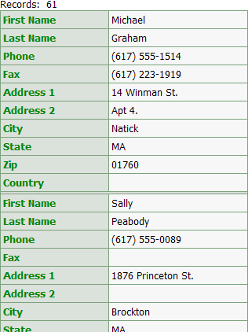
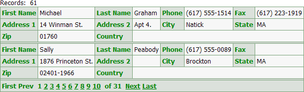
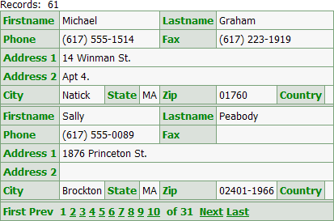
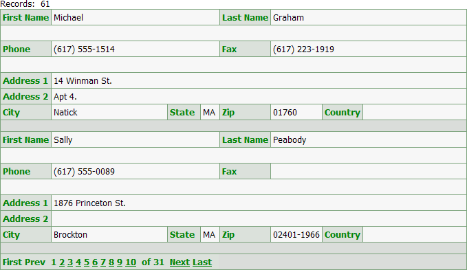

Using Row Spacers for Control Positioning
When designing a dialog component or a grid component with columnar formatting (where the Layout Options > Number of "Layout" Columns property is greater than 1), you may position controls by inserting row after controls.
The following example shows the effects of adding column spacers. In this case the grid has the following properties:
Layout Options > Number of "Layout" columns is set to 4
Layout Options > Rows of data is set to 2
The grid has 10 fields. This is the default layout of the grid.

After setting Layout Options > Number of "Layout" columns to 4.

After setting Row Properties > Column span to 2 for Firstname, Lastname, Phone, and Fax.

After placing row spacers after the Lastname and Fax fields and setting the Label Properties > In-line style of the City and Country fields to width:1.5in;.

See Also
Using the Number of "Layout" Columns Feature
Limitations
Web publishing applications only.